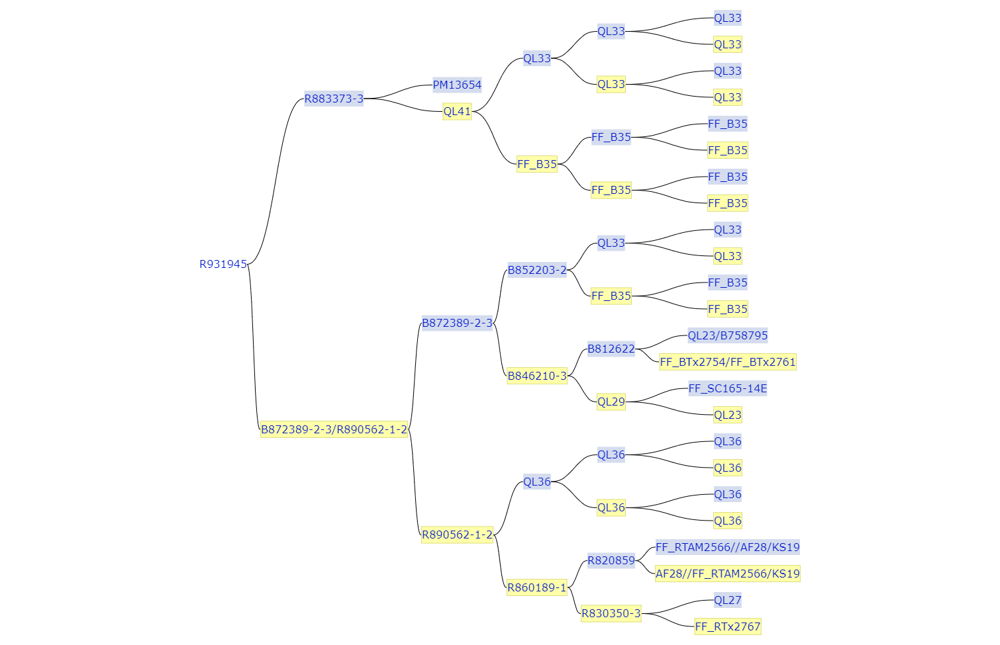

About Sorghum R931945-2-2
R931945-2-2 is an S.bicolor breeding line developed and owned by the Queensland Government, Australia. It is the product of successful selection to develop lines with resistance to sorghum midge and stay-green type drought resistance. It is a restorer of fertility in the A1 male-sterile cytoplasm. R931945-2-2 has a complex pedigree that includes the stay-green donor, Tx642, at several points and multiple donors of midge resistance including TAM2566, SC165-14E, AF28 and BTx2754.
R931945-2-2 has been used repeatedly as the adapted recurrent parent in the development of extensive BCNAM populations by the Australian core pre-breeding program. It has also been an important parent in the development of restorer lines in multiple commercial grain sorghum breeding programs.
Graphical representation of the pedigree of R931945-2-2:

Assembly
The genome assembly of Sorghum R931945-2-2 was reported in Tao et al, 2021. Sequencing was conducted by the Australia Sorghum breeding team in collaboration with BGI-Shenzhen using Illumina HiSeq 4000 platform and the PacBio Sequel platform to achieve 179X and 29X coverage, respectively. The assembly effort generated a genome of 599.2Mb with contigs N50 of 116.5kb.
Annotation
Gene prediction was performed using a hybrid approach combining de novo gene predictors and evidence-based methods (Tao et al, 2021), which led to the identification of 33,567 genes in the genome.
References
- [Extensive variation within the pan-genome of cultivated and wild sorghum.] (https://doi.org/10.1038/s41477-021-00925-x)Tao Y, Luo H, Xu J, Cruickshank A, Zhao X, Teng F, Hathorn A. Wu X. Liu Y. Shatte T et al. Nat. Plants.
- [The Sorghum bicolor genome and the diversification of grasses.](http://doi.org/10.1038/nature07723)
Paterson AH, Bowers JE, Bruggmann R, Dubchak I, Grimwood J, Gundlach H, Haberer G, Hellsten U, Mitros T, Poliakov A et al. 2009. Nature. 457:551-556.
- [The Sorghum bicolor reference genome: improved assembly, gene annotations, a transcriptome atlas, and signatures of genome organization.](http://doi.org/10.1111/tpj.13781)
McCormick RF, Truong SK, Sreedasyam A, Jenkins J, Shu S, Sims D, Kennedy M, Amirebrahimi M, Weers BD, McKinley B et al. 2018. Plant J. 93:338-354.
- [Population genomic and genome-wide association studies of agroclimatic traits in sorghum.](http://doi.org/10.1073/pnas.1215985110)
Morris GP, Ramu P, Deshpande SP, Hash CT, Shah T, Upadhyaya HD, Riera-Lizarazu O, Brown PJ, Acharya CB, Mitchell SE et al. 2013. Proc. Natl. Acad. Sci. U.S.A.. 110:453-458.
- [Whole-genome sequencing reveals untapped genetic potential in Africa's indigenous cereal crop sorghum.](http://doi.org/10.1038/ncomms3320)
Mace ES, Tai S, Gilding EK, Li Y, Prentis PJ, Bian L, Campbell BC, Hu W, Innes DJ, Han X et al. 2013. Nat Commun. 4:2320.
- [A Sorghum Mutant Resource as an Efficient Platform for Gene Discovery in Grasses.](http://doi.org/10.1105/tpc.16.00373)
Jiao Y, Burke J, Chopra R, Burow G, Chen J, Wang B, Hayes C, Emendack Y, Ware D, Xin Z. 2016. Plant Cell. 28:1551-1562.
- [Applying genotyping (TILLING) and phenotyping analyses to elucidate gene function in a chemically induced sorghum mutant population.](http://doi.org/10.1186/1471-2229-8-103)
Xin Z, Wang ML, Barkley NA, Burow G, Franks C, Pederson G, Burke J. 2008. BMC Plant Biol 2008, 8:103.
- [Forward Genetics by Sequencing EMS Variation-Induced Inbred Lines.](http://doi.org/10.1534/g3.116.029660)
Addo-Quaye C, Buescher E, Best N, Chaikam V, Baxter I and Dilkes BP. 2017. G3: Genes, Genomes, Genetics. 7(2):413-425.